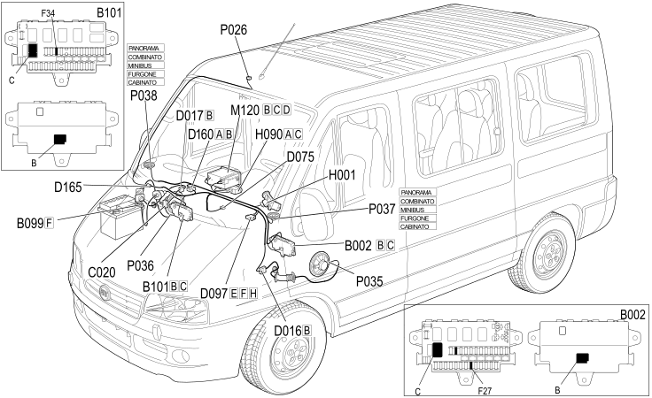

E3580 PROVISION FOR CELL PHONE COMPONENT LOCATION
- Path
- Electrical equipment > 1 ELECTRICAL FUNCTIONS > E35 RADIO ACCESSORIES > E3580 PREPARATION FOR CELLULAR TELEPHONE > E3580 PROVISION FOR CELL PHONE COMPONENT LOCATION
- Kind
- topic
- Applies to
- all engines; all production periods
- Interactive page
- https://sloeber94.github.io/elrnDB-fDct/en/#/244001826
Applies to: all engines; all production periods
Component location

Component code | Description | Reference to the assembly |
|---|---|---|
JUNCTION UNIT UNDER DASHBOARD | - | |
MAXI FUSE BOX ON BATTERY | - | |
OPTIONAL JUNCTION UNIT UNDER THE DASHBOARD | - | |
PASSENGER SIDE DASHBOARD EARTH | - | |
ADDITIONAL DASHBOARD/LEFT FRONT DOOR COUPLING | - | |
ADDITIONAL DASHBOARD/RIGHT FRONT DOOR COUPLING | - | |
RADIO PHONE COUPLING | - | |
SHORT CIRCUITING COUPLING | - | |
DASHBOARD/OPTIONAL DASHBOARD COUPLING | - | |
OPTIONAL DASHBOARD/OPTIONAL COURTESY LIGHT COUPLING | - | |
IGNITION SWITCH | ||
SWITCH CONTROL PANEL | 5,505A | |
Connect front panel | - | |
HANDSFREE MICROPHONE | - | |
SPEAKER ON FRONT DOOR LEFT | 5570T | |
SPEAKER IN RIGHT FRONT DOOR | 5570T | |
LEFT FRONT SPEAKER IN DASHBOARD | - | |
RIGHT FRONT SPEAKER IN DASHBOARD | - | |
- |
Topics linked from this page (19)
- 5520A IGNITION SWITCH
- B002 JUNCTION UNIT UNDER DASHBOARD
- B099 MAXI FUSE BOX ON BATTERY
- B101 OPTIONAL JUNCTION UNIT UNDER THE DASHBOARD
- C020 PASSENGER SIDE DASHBOARD EARTH
- D016 ADDITIONAL DASHBOARD/LEFT FRONT DOOR COUPLING
- D017 ADDITIONAL DASHBOARD/RIGHT FRONT DOOR COUPLING
- D075 RADIO PHONE COUPLING
- D097 SHORT CIRCUITING COUPLING
- D160 DASHBOARD/OPTIONAL DASHBOARD COUPLING
- D165 OPTIONAL DASHBOARD/OPTIONAL COURTESY LIGHT COUPLING
- H001 IGNITION SWITCH
- H090 SWITCH CONTROL PANEL
- M120 Connect front panel
- P026 HANDSFREE MICROPHONE
- P035 SPEAKER ON FRONT DOOR LEFT
- P036 SPEAKER IN RIGHT FRONT DOOR
- P037 LEFT FRONT SPEAKER IN DASHBOARD
- P038 RIGHT FRONT SPEAKER IN DASHBOARD